Chuyển đổi Messages API sang Rust
Bản gốc là bài “Migrating our Messages API to Rust” trên trang Anthropic Research, được giới thiệu qua bài đăng ngày 25/11/2026 của @AnthropicAI. Bản dịch phục vụ học tập phi thương mại; mọi quyền đối với nội dung và 17 hình minh họa gốc thuộc về Anthropic và các tác giả. Ghi công không đồng nghĩa với giấy phép tái sử dụng; toàn bộ hình được lưu cùng bài, không hotlink. Bạn có thể đọc thêm các bài liên quan trên blog như “Rust trong bình yên” và “Xây ngôn ngữ Zed với đội quân agent AI”.
TL;DR
- Nút thắt mới không phải viết mã mà là kiểm chứng: Lưu lượng Messages API tăng khoảng 1.800 lần từ đầu 2024 đến mùa thu 2026. Claude viết bản đầu của luồng xử lý chính bằng Rust chỉ trong khoảng 1 tuần, nhưng chứng minh được bản Rust hành xử tương đương bản Python đang chạy production mới là bài toán khó — vì bản Python vẫn liên tục thay đổi, đầu ra của Claude bất tất định, và kỹ sư không được đọc request của khách hàng.
- Viết lại từng phần không bù nổi độ phức tạp: Thử nghiệm ban đầu (3/2026) chỉ chuyển phần phân tích token sang Rust giúp giảm 8%–10% CPU, nhưng mỗi token phải qua lại ranh giới Python–Rust 3 lần. Di chuyển toàn bộ sang Rust giúp giảm khoảng 70% CPU mỗi request, hơn 80% bộ nhớ mỗi request và giảm khoảng 20% TTFT trung vị mà không cần ngừng dịch vụ hay đóng băng tính năng.
- Integration test cũ là chưa đủ: Khoảng 700 test cũ gắn chặt vào Python (kiểm toán test đã port phát hiện hơn 100 assertion bị làm yếu) và chỉ 20 tùy chọn nhị phân đã tạo hơn một triệu tổ hợp. Tháng 4/2026, bản Rust qua khoảng 98% test nhưng chỉ khớp khoảng 24% đầu vào trên lưu lượng production.
- Dùng chính production làm bộ kiểm chứng (oracle), vẫn giữ kín nội dung: Gọi mô hình một lần rồi phát lại đầu ra cho Rust để không tính cước/hạn mức hai lần; so khớp qua checkpointing (từng bước, từng mảnh prompt) và fingerprint (vị trí byte khác đầu tiên + chênh lệch độ dài), giúp tỷ lệ khớp đầu vào tăng từ 24% (cuối tháng 4) lên 99,6% (tháng 8).
- Ba vòng lặp + con người lùi ra vòng ngoài: Vòng trong chạy cục bộ trong sandbox dưới 1 giây (agent tự viết request/reply giả để tái hiện fingerprint); cổng duyệt PR trên Slack chặn mã đối phó; vòng ngoài theo dõi fingerprint trên shadow traffic ngoài production; vòng trí nhớ biến sửa lỗi của kỹ sư thành quy tắc trong
CLAUDE.md, tìm kiếm tương tự và test chống trôi lệch.
Cách đọc: Ở chế độ Song ngữ, rê chuột lên từng đoạn để xem tiếng Việt bên dưới. Trên điện thoại, chạm đoạn để mở/đóng bản dịch; chạm liên kết vẫn mở liên kết. Dùng phím Tab để xem bản dịch, Esc để đóng. Nút nổi góc dưới bên trái chuyển sang Toàn bộ tiếng Việt và ghi nhớ lựa chọn. Khi tắt JavaScript, cả hai ngôn ngữ được hiển thị.
Bài gốc và bản dịch
Many problems have a generator–verifier gap: it’s often far easier to verify that a solution is correct than to come up with one. Sudoku is a classic example. It’s simple to check the solution (just count the numbers in each row, column, and box), but finding that solution can take a long time. Many ambitious Claude projects have relied on this gap: formalizing proofs in mathematics or migrating large, well-tested codebases are tasks Claude can take on as long as it has a reliable way to verify its work.
Nhiều bài toán tồn tại một khoảng cách giữa người tạo lời giải và người kiểm chứng (generator–verifier gap): kiểm tra xem một lời giải có đúng hay không thường dễ hơn nhiều so với việc tự nghĩ ra lời giải đó. Sudoku là ví dụ kinh điển. Kiểm tra đáp án rất đơn giản (chỉ cần đếm các con số trong từng hàng, cột và ô vuông), nhưng tìm ra đáp án có thể mất rất nhiều thời gian. Nhiều dự án đầy tham vọng với Claude dựa vào khoảng cách này: hình thức hóa các chứng minh trong toán học hay di chuyển các codebase lớn có bộ test đầy đủ đều là những việc Claude có thể đảm nhận miễn là có cách đáng tin cậy để kiểm chứng kết quả.
But as Claude has become more capable, it’s begun to take on projects in live systems, where generating the work is easier than verifying it. In these systems, users often rely on edge cases and quirks that fall outside the test suite, and it’s hard to write a definition of “correct” that covers everything. Without a reliable way to check Claude’s work, the migration of a live system is hard to trust—however quickly Claude can generate the code for it.
Nhưng khi Claude ngày càng mạnh hơn, nó bắt đầu đảm nhận các dự án trong những hệ thống đang chạy thật (live systems), nơi việc tạo ra mã lại dễ hơn việc kiểm chứng. Trong các hệ thống này, người dùng thường phụ thuộc vào những trường hợp biên và đặc tính riêng nằm ngoài bộ test, và rất khó viết ra một định nghĩa “đúng” bao quát được mọi thứ. Không có cách kiểm tra đáng tin cậy đối với kết quả của Claude, ta khó lòng tin tưởng quá trình di chuyển một hệ thống đang vận hành — bất chấp Claude sinh mã nhanh đến đâu.
We ran into this problem when we migrated our Messages API from Python to Rust. This API is the primary way that customers—as well as our own apps, like Claude Code and Cowork—reach Claude. From early 2024 to fall 2026, API traffic grew roughly 1,800 times. Rust would allow us to use far less CPU per request. Claude wrote a first version of the API’s core request path in about a week. But building trust in the migration required us to find a way to verify that our Rust API was at parity with our production API. This proved hard for several reasons, including that the Python API continued changing throughout the migration, so parity was a moving target; Claude can reply nondeterministically to the same request, so a difference between two outputs didn’t necessarily mean a bug; and we couldn't read customer requests, so we weren't able to easily see where the two versions diverged.
Chúng tôi đã gặp đúng vấn đề này khi di chuyển Messages API từ Python sang Rust. API này là con đường chính để khách hàng — cũng như các ứng dụng nội bộ của chúng tôi như Claude Code và Cowork — gọi tới Claude. Từ đầu năm 2024 đến mùa thu năm 2026, lưu lượng API tăng khoảng 1.800 lần. Rust sẽ giúp chúng tôi dùng ít CPU hơn hẳn cho mỗi request. Claude viết phiên bản đầu tiên cho luồng xử lý request cốt lõi của API chỉ trong khoảng một tuần. Nhưng để tạo niềm tin cho cuộc chuyển đổi, chúng tôi phải tìm cách kiểm chứng rằng bản Rust tương đương (parity) với API đang chạy production. Điều này khó vì nhiều lý do: API Python vẫn tiếp tục thay đổi trong suốt thời gian chuyển đổi nên sự tương đương là một mục tiêu di động; Claude có thể trả lời bất tất định với cùng một request nên hai đầu ra khác nhau chưa chắc đã là lỗi; và chúng tôi không được đọc request của khách hàng nên không thể dễ dàng nhìn thẳng xem hai phiên bản lệch nhau ở đâu.
In this post, we share how we turned the production Messages API itself into a verifier—and how that helped us test the new Rust version on production traffic, find where it differed, and automatically dispatch agents to fix those differences. This allowed us to ship an API on Rust that uses about 70% less CPU per request and cuts median time to first token by about 20% without ever taking the service offline or freezing feature development.
Trong bài viết này, chúng tôi chia sẻ cách biến chính Messages API đang chạy production thành một bộ kiểm chứng — và cách làm đó giúp thử nghiệm phiên bản Rust mới trên lưu lượng thật, phát hiện chỗ sai khác và tự động điều phối các agent đi sửa những khác biệt ấy. Nhờ vậy, chúng tôi đã đưa API trên Rust vào vận hành với mức tiêu thụ CPU mỗi request giảm khoảng 70% và thời gian trung vị tới token đầu tiên giảm khoảng 20%, mà không bao giờ phải tắt dịch vụ hay đóng băng phát triển tính năng.
Why migrate?
Vì sao phải chuyển đổi?
We built the Messages API in 2023 and wrote it in Python, which was widely used internally for much of our research code. At first, it was simple. The Messages API passed requests to the model and sent back what the model wrote. (One engineer at the time called it “basically a request forwarder.”) But as the Messages API became more capable and deeply integrated with our codebases, it also developed shared dependencies with Python libraries that were owned by our research and inference teams, which made it hard to move. If we ever wanted to move to another language, it would mean building logging, metrics, and tools all over again.
Chúng tôi xây dựng Messages API vào năm 2023 và viết bằng Python, ngôn ngữ được dùng rộng rãi trong phần lớn mã nghiên cứu nội bộ. Ban đầu mọi thứ rất đơn giản. Messages API chuyển request tới mô hình rồi trả về những gì mô hình viết ra. (Một kỹ sư hồi đó gọi nó “về cơ bản là một bộ chuyển tiếp request”.) Nhưng khi Messages API ngày càng nhiều tính năng và tích hợp sâu với các codebase khác, nó cũng hình thành các phụ thuộc dùng chung vào những thư viện Python do nhóm nghiên cứu và nhóm suy luận sở hữu, khiến việc tách ra trở nên rất khó. Nếu muốn chuyển sang ngôn ngữ khác, chúng tôi sẽ phải xây dựng lại toàn bộ hệ thống ghi log, số liệu đo lường và công cụ phụ trợ.
This calculus gradually began to change. By late 2025, every Messages API request had to be validated, converted into the prompt, tokenized, and screened by our safety classifiers. As each reply arrived, the stream of tokens had to be sorted into text, thinking, and tool calls, and Python added overhead to every one of those steps each time it created an object, freed memory, or handed its work to the next task. Traffic eventually grew far beyond what the initial Python service was built for (Figure 1), and we quickly needed to find a way to make the service much more efficient.
Bài toán đánh đổi này dần thay đổi. Đến cuối năm 2025, mọi request tới Messages API đều phải được kiểm tra hợp lệ, chuyển đổi thành prompt, tách token và sàng lọc qua các bộ phân loại an toàn. Khi câu trả lời quay về, luồng token phải được phân tách thành văn bản, suy nghĩ (thinking) và lời gọi công cụ (tool calls); và Python cộng thêm chi phí phụ vào từng bước đó mỗi lần nó khởi tạo đối tượng, giải phóng bộ nhớ hay chuyển việc cho tác vụ kế tiếp. Lưu lượng cuối cùng vượt xa mức dịch vụ Python ban đầu được thiết kế để gánh (Hình 1), và chúng tôi nhanh chóng cần một cách làm dịch vụ hiệu quả hơn nhiều.
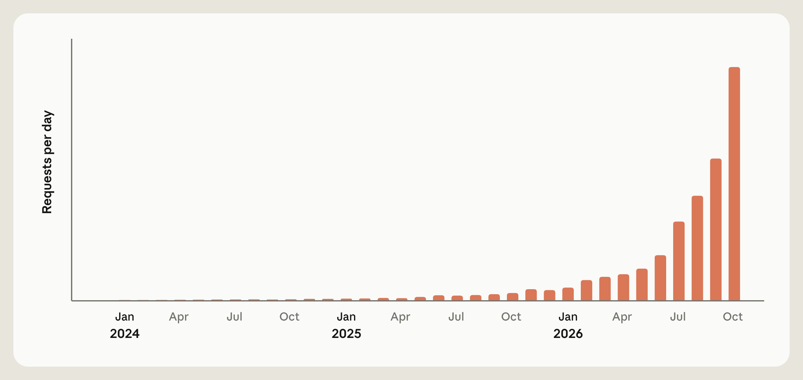
Incremental or all at once?
Chuyển từng phần hay chuyển toàn bộ?
Full rewrites of large production systems are often approached cautiously, for at least two reasons. First, there is no guarantee that test suites cover 100% of production code behavior, and rewriting it is risky. Second, the sheer effort required often makes such work intractable. (In 2024, after one of our engineers suggested migrating to Go or Rust, another temporarily settled the question: “We are not rewriting the API in go or rust!”)
Việc viết lại hoàn toàn các hệ thống production lớn thường được tiếp cận rất thận trọng vì ít nhất hai lý do. Thứ nhất, không có gì bảo đảm bộ test bao phủ 100% hành vi của mã đang chạy thật, nên viết lại tiềm ẩn rủi ro lớn. Thứ hai, khối lượng công sức khổng lồ thường khiến việc đó gần như bất khả thi. (Năm 2024, sau khi một kỹ sư đề xuất chuyển sang Go hoặc Rust, một kỹ sư khác đã tạm khép lại cuộc tranh luận: “Chúng ta không viết lại API bằng Go hay Rust đâu!”)
The standard advice if you’re looking for performance gains is thus to rewrite only the parts that are slowing the system down, so that’s where we started. In Rust, we rewrote the code that parses a model’s output and called it from Python. This reduced the API’s CPU usage by about 8% to 10%. However, incremental solutions often incur added complexity, and it’s important to make sure that incremental improvements justify those costs. In our case, the gains didn’t justify the added complexity. Each token now crossed between Python and Rust three times (Figure 2), creating new sources of overhead.
Lời khuyên kinh điển khi cần tăng hiệu năng là chỉ viết lại những phần đang làm chậm hệ thống, nên chúng tôi bắt đầu từ đó. Chúng tôi viết lại phần mã phân tích đầu ra của mô hình bằng Rust và gọi nó từ Python. Cách này giúp giảm mức dùng CPU của API khoảng 8% đến 10%. Tuy nhiên, giải pháp từng phần thường làm tăng độ phức tạp, và cần cân nhắc xem cải thiện thu được có xứng đáng với chi phí đó không. Trong trường hợp của chúng tôi, phần lợi không bù nổi độ phức tạp tăng thêm. Mỗi token giờ phải băng qua ranh giới giữa Python và Rust tới ba lần (Hình 2), tạo ra những nguồn chi phí phụ mới.
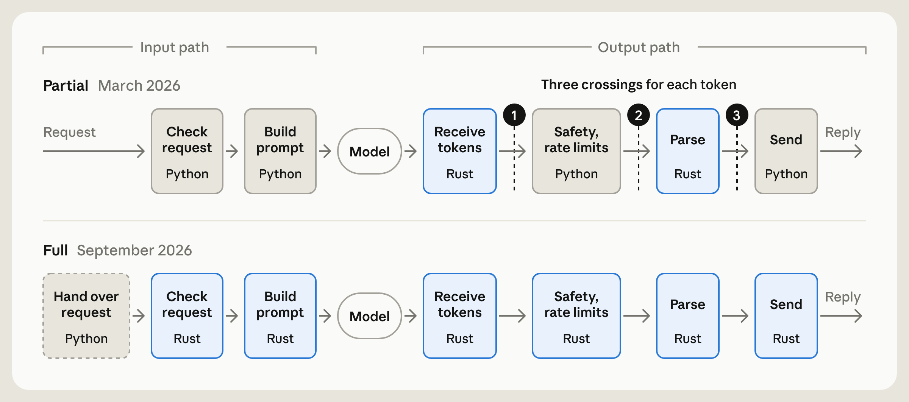
As Claude became increasingly capable, we began to question whether the usual reasons to avoid a full migration still held. The effort required to undertake the project was dropping fast: by May 2026, Claude was writing more than 80% of the code Anthropic merged. We wondered if Claude could now help us write code that would empirically capture every behavior and fix in the production system. But the question became: how could we verify that the behavior of our migration was correct? Verification, not generation, had become the bottleneck.
Khi Claude ngày càng có năng lực hơn, chúng tôi bắt đầu đặt câu hỏi liệu những lý do truyền thống khiến người ta né tránh việc chuyển đổi toàn bộ có còn đúng nữa hay không. Công sức bỏ ra để thực hiện dự án đang giảm rất nhanh: tới tháng 5/2026, Claude đã viết hơn 80% lượng mã được Anthropic merge. Chúng tôi tự hỏi liệu Claude có thể giúp viết ra đoạn mã nắm bắt đầy đủ theo thực nghiệm mọi hành vi và bản vá trong hệ thống production hay không. Nhưng câu hỏi đặt ra trở thành: làm thế nào để kiểm chứng rằng hành vi sau khi di chuyển là đúng? Kiểm chứng, chứ không phải sinh mã, đã trở thành nút thắt cổ chai.
How we verified the migration
Cách chúng tôi kiểm chứng quá trình chuyển đổi
General approaches
Các hướng tiếp cận tổng quát
To verify the migration, we first needed to define what “correct” meant. You can do this in a few ways (Figure 3). If you’re lucky, you can simply write a rule. A theorem in mathematics is a precise statement, and a proof assistant (like Lean) can check each step of a proof against a fixed set of rules. Other times—and more frequently in software engineering—you define “correct” with a set of examples, like tests. For instance, when Bun moved from Zig to Rust, its test suite was written in TypeScript, so the same tests could judge both versions. In our case, neither approach was sufficient, so we used the existing system as an oracle to test parity during the migration. In this case, our existing system (the Messages API) kept changing. We were releasing new models and shipping new features regularly, which made the definition of “correct” a moving target.
Để kiểm chứng quá trình di chuyển, trước hết chúng tôi cần định nghĩa thế nào là “đúng”. Có vài cách làm điều này (Hình 3). Nếu may mắn, bạn có thể viết thẳng ra một quy tắc. Một định lý toán học là một phát biểu chuẩn xác, và trình hỗ trợ chứng minh (như Lean) có thể kiểm tra từng bước chứng minh dựa trên một tập quy tắc cố định. Những lúc khác — và phổ biến hơn trong kỹ thuật phần mềm — bạn định nghĩa cái “đúng” bằng một tập ví dụ, tức là các bài test. Chẳng hạn, khi Bun chuyển từ Zig sang Rust, bộ test của nó được viết bằng TypeScript nên cùng một bộ test có thể chấm điểm cả hai phiên bản. Trong trường hợp của chúng tôi, cả hai cách đều không đủ, nên chúng tôi dùng chính hệ thống hiện có làm chuẩn đối chiếu (oracle) để kiểm tra độ tương đương trong lúc chuyển đổi. Ở đây, hệ thống hiện có (Messages API) vẫn liên tục thay đổi. Chúng tôi thường xuyên phát hành mô hình mới và tính năng mới, khiến định nghĩa của từ “đúng” trở thành một mục tiêu di động.
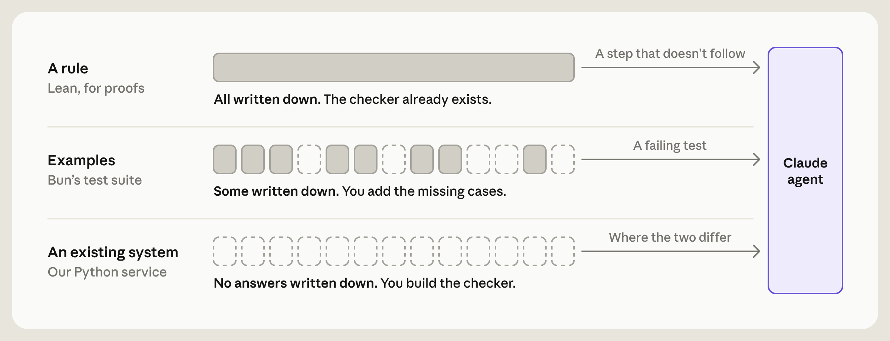
Tests
Các bài kiểm thử (Tests)
Tests were the easiest place for us to start, since we already had an existing set of about 700 integration tests. However, two problems limited our ability to trust them to verify the correctness of a migration as high stakes as this (Figure 4).
Bộ test là điểm khởi đầu dễ nhất, vì chúng tôi đã có sẵn khoảng 700 integration test. Tuy nhiên, có hai vấn đề hạn chế khả năng tin cậy vào chúng để kiểm chứng một cuộc di chuyển có độ rủi ro cao như thế này (Hình 4).
The tests were coupled to the Python implementation. An integration test sends a request, then checks the reply and what was sent to other services. Our tests ran the Python API inside the test’s process and mocked services, like billing and rate limiting, in Python’s memory. The tests had to change along with the code, and Claude helped with both. Now, a “pass” could mean that the code was right, or that the test had been changed in a way that let wrong code through. We saw this happen: when we audited the ported tests, we found more than 100 weakened assertions.
Các bài test gắn chặt vào bản cài đặt Python. Một integration test gửi một request, rồi kiểm tra câu trả lời và những gì được gửi sang các dịch vụ khác. Bộ test của chúng tôi chạy Python API ngay trong tiến trình test và giả lập (mock) các dịch vụ như tính cước hay giới hạn tần suất trong bộ nhớ Python. Khi đổi mã, bài test cũng phải sửa theo, và Claude tham gia làm cả hai việc đó. Lúc này, một kết quả “pass” có thể có nghĩa mã đã đúng, hoặc bài test đã bị sửa theo cách để lọt mã sai. Chúng tôi đã chứng kiến điều đó xảy ra: khi kiểm toán lại các bài test được port sang, chúng tôi phát hiện hơn 100 assertion bị làm yếu đi.
The tests were incomplete. The Messages API has dozens of features, and there are far too many configurations to test them exhaustively. Just 20 binary options make over a million combinations—that translates to 12 days of tests at a second each, for one model, before we even vary the prompts inside them. In practice, engineers test a subset that tries to approximate production, but that process inevitably misses cases. Some projects, like Bun, have an independent suite that’s extensive enough to judge a rewrite. Many production services don’t; what counts as correct depends as much on how they behave as on what’s in their tests or documentation.
Các bài test không đầy đủ. Messages API có hàng chục tính năng và quá nhiều cấu hình để có thể kiểm thử vét cạn. Chỉ riêng 20 tùy chọn nhị phân đã tạo ra hơn một triệu tổ hợp — tương đương 12 ngày chạy test với tốc độ một giây mỗi trường hợp, chỉ cho một mô hình, còn chưa tính đến việc thay đổi nội dung prompt bên trong. Trên thực tế, kỹ sư chỉ test một tập con cố gắng mô phỏng production, nhưng cách đó chắc chắn sẽ bỏ sót. Một số dự án như Bun có bộ test độc lập đủ rộng để đánh giá bản viết lại. Nhiều dịch vụ production thì không; điều được coi là đúng phụ thuộc vào cách chúng thực sự vận hành ngoài đời không kém gì những gì ghi trong test hay tài liệu.
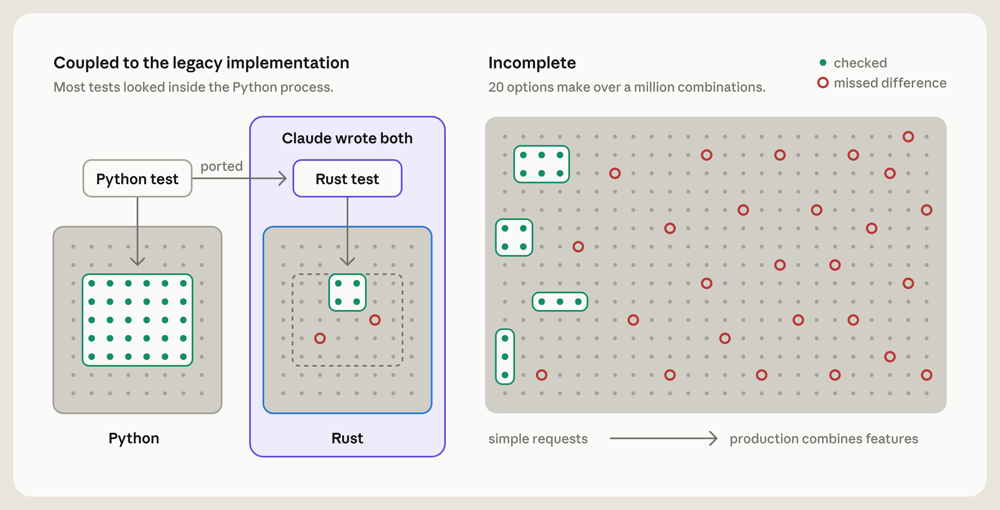
Detecting parity with production
Phát hiện độ tương đương với production
Production data is sometimes “the only true test” that new code behaves like the old code. Running requests through old and new code and comparing the results is often called shadowing. To understand what we needed to compare, it helps to walk through what happens to a single request on the Messages API (Figure 5). The API validates each request, converts it into a prompt a model can read (the prompt for inference), tokenizes it, and runs it through safety classifiers. A model then writes a reply, one token at a time. On the output side, the API sorts those tokens into text, thinking, and tool calls, streams them to the customer, and counts usage for limits and billing.
Dữ liệu production đôi khi là “bài kiểm tra thực sự duy nhất” chứng minh mã mới hành xử giống mã cũ. Việc cho request chạy song song qua cả mã cũ và mã mới rồi đối chiếu kết quả thường được gọi là shadowing. Để hiểu chúng tôi cần so sánh những gì, hãy đi qua hành trình của một request trên Messages API (Hình 5). API kiểm tra hợp lệ từng request, chuyển nó thành prompt mà mô hình đọc được (prompt cho suy luận), tách token và cho chạy qua các bộ phân loại an toàn. Sau đó mô hình viết câu trả lời từng token một. Ở đầu ra, API phân loại chuỗi token đó thành văn bản, thinking và lời gọi công cụ, truyền luồng (stream) về cho khách hàng và đếm mức sử dụng để tính hạn mức và cước phí.
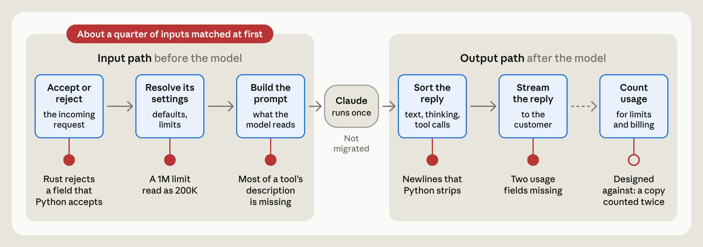
The migration covered both the input and output paths. Some differences were obvious, such as when the Rust API rejected a request that Python had accepted. But many were subtle. For instance, if the Rust API left out part of a prompt, the request would still succeed and the model would still answer, though sometimes with minor differences.
Cuộc chuyển đổi bao phủ cả luồng đầu vào lẫn luồng đầu ra. Một số khác biệt rất dễ thấy, như khi Rust API từ chối một request mà Python chấp nhận. Nhưng nhiều lỗi lại rất tinh vi. Ví dụ, nếu Rust API vô tình bỏ sót một phần prompt, request vẫn thành công và mô hình vẫn trả lời, chỉ khác đi chút ít.
Our Rust API passed about 98% of its tests in April, yet only about a quarter of inputs matched on production traffic (Figure 6). The gap came partly from cases in production traffic that our tests didn’t cover. For example, when Python writes JSON tool calls, it escapes certain characters (e.g., an emoji) by replacing them with text codes. Rust wrote those characters as is, so the two prompts differed by a few bytes. Production also weighted bugs differently. In a test suite, each case counts once, but in live traffic, a bug will show up in each request where it’s triggered, which means a single common bug can cause many mismatches.
Vào tháng 4, bản Rust API vượt qua khoảng 98% bộ test, thế nhưng chỉ khoảng một phần tư đầu vào khớp hoàn toàn trên lưu lượng production (Hình 6). Khoảng cách này một phần đến từ những tình huống ngoài đời thực mà bộ test chưa phủ tới. Chẳng hạn, khi Python xuất JSON cho tool call, nó escape một số ký tự (ví dụ emoji) bằng mã văn bản. Rust lại giữ nguyên các ký tự đó, khiến hai prompt lệch nhau vài byte. Production cũng đánh trọng số các lỗi theo cách khác. Trong bộ test, mỗi trường hợp chỉ tính một lần, nhưng trên lưu lượng thật, một lỗi sẽ xuất hiện ở mọi request kích hoạt nó — nghĩa là chỉ một lỗi phổ biến cũng có thể gây ra hàng loạt sai lệch.
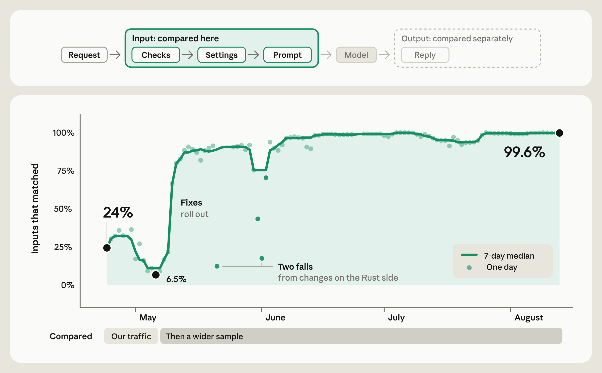
Common tools for shadowing often assume that a request can safely run twice, or that a service is deterministic. These assumptions didn’t apply in our case. We had to ensure that a request only counted once toward a customer’s limits and bill. In addition, Claude is nondeterministic, meaning that replies can differ for the same input (Figure 7). To address this, we ran the model once and replayed the model output to Rust.
Các công cụ shadowing phổ biến thường giả định rằng một request có thể chạy hai lần một cách an toàn, hoặc dịch vụ có tính tất định. Những giả định đó không đúng với chúng tôi. Chúng tôi phải bảo đảm mỗi request chỉ được tính một lần vào hạn mức và hóa đơn của khách hàng. Thêm vào đó, Claude mang tính bất tất định, nghĩa là câu trả lời có thể khác nhau với cùng một đầu vào (Hình 7). Để giải quyết, chúng tôi chỉ gọi mô hình một lần rồi phát lại (replay) đầu ra của mô hình sang cho Rust.
With both versions working from the same model output, we still had to compare every stage before and after the model call, and the results had to match exactly. In many systems, bad input causes an error somewhere down the stack. But since Claude accepts almost any prompt, even a small deviation can change its reply without triggering an error. We compared each step before and after the model call, so that we could pin down any deviation that might change what a customer received.
Khi cả hai phiên bản cùng làm việc trên một đầu ra mô hình giống hệt nhau, chúng tôi vẫn phải đối chiếu từng công đoạn trước và sau lời gọi mô hình, và kết quả phải khớp tuyệt đối. Ở nhiều hệ thống khác, đầu vào lỗi sẽ làm phát sinh exception đâu đó bên dưới. Nhưng vì Claude chấp nhận hầu như mọi prompt, chỉ một sai lệch nhỏ cũng có thể làm thay đổi câu trả lời mà không hề báo lỗi. Chúng tôi so sánh từng bước trước và sau khi gọi mô hình để khoanh vùng mọi sai lệch có nguy cơ làm đổi kết quả khách hàng nhận được.
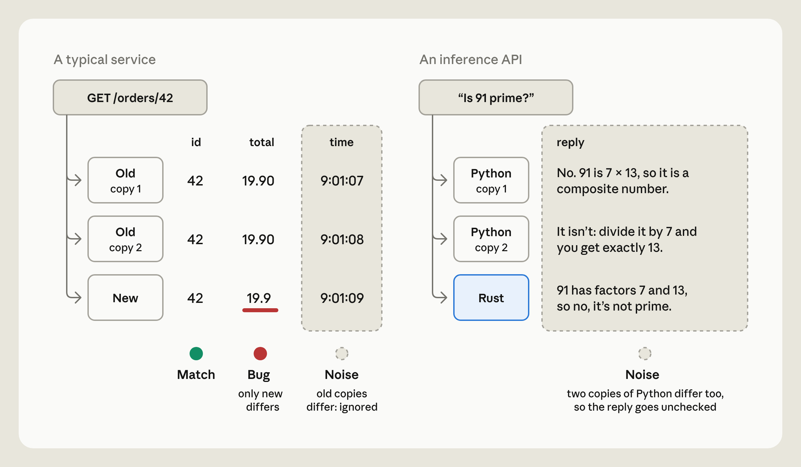
It was important to us to do this in a way that protected user privacy. To do that we had to work without reading user requests or Claude’s replies to them, which means we couldn’t easily see where the Rust and Python versions of the API differed. So instead of looking at text, we recorded the shape of each difference, such as where it happened in the service and how big it was. We did this using a few different approaches:
Điều quan trọng với chúng tôi là phải thực hiện việc này theo cách bảo vệ quyền riêng tư của người dùng. Muốn vậy, chúng tôi phải làm việc mà không đọc request của người dùng hay câu trả lời của Claude, đồng nghĩa với việc không thể dễ dàng nhìn thẳng xem bản Rust và bản Python lệch nhau chỗ nào. Vì thế, thay vì nhìn nội dung chữ, chúng tôi ghi lại “hình dạng” của từng sai khác, chẳng hạn nó xảy ra ở đâu trong dịch vụ và kích thước chênh lệch là bao nhiêu. Chúng tôi dùng vài cách tiếp cận sau:
- Checkpointing. Both API versions handle a request using the same steps: accept or reject it, resolve its settings, build the prompt. Every step produces some result, such as an error or the pieces of the prompt, that we could compare step by step, and within the prompt, piece by piece. The first place they differed indicated roughly where the migration code differed from production code (Figure 8).
- Đặt điểm kiểm tra (Checkpointing). Cả hai phiên bản API đều xử lý request theo cùng chuỗi bước: chấp nhận hay từ chối, xác định thiết lập, dựng prompt. Mỗi bước tạo ra một kết quả — như một thông báo lỗi hoặc các mảnh của prompt — để chúng tôi đối chiếu từng bước một, và bên trong prompt thì đối chiếu từng mảnh một. Điểm đầu tiên hai bên khác nhau sẽ chỉ ra đại khái chỗ mã di chuyển lệch khỏi mã production (Hình 8).
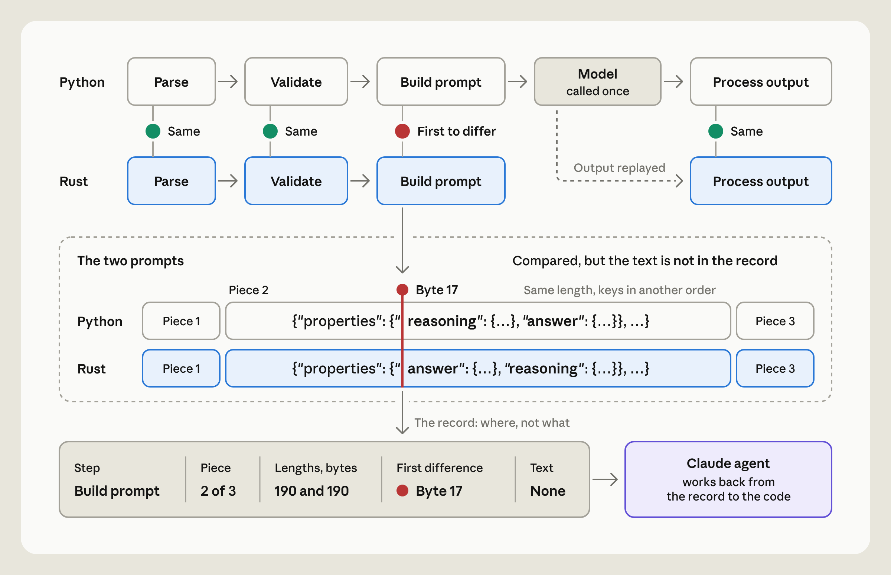
- Fingerprint. Once we knew roughly where each diff resided, we still needed a way to distinguish one bug from another. We recorded where each difference began in the prompt, as well as the length difference between the two versions. Combined with the step and piece of the prompt isolated in checkpointing, we found that bugs presented with a specific fingerprint. That is, one bug tends to leave the same fingerprint on every request it affects (Figure 9). We could then group errors by fingerprint, which helped us triage the fixes.
- Dấu vân tay lỗi (Fingerprint). Khi đã biết đại khái chỗ sai khác nằm ở đâu, chúng tôi vẫn cần cách phân biệt lỗi này với lỗi kia. Chúng tôi ghi lại vị trí sai khác bắt đầu trong prompt cũng như mức chênh lệch độ dài giữa hai phiên bản. Kết hợp với bước và mảnh prompt đã khoanh vùng ở checkpointing, chúng tôi nhận thấy mỗi lỗi để lại một “dấu vân tay” đặc trưng — tức là một lỗi có xu hướng để lại cùng một fingerprint trên mọi request mà nó ảnh hưởng (Hình 9). Nhờ vậy chúng tôi có thể gom nhóm lỗi theo fingerprint để phân loại và ưu tiên sửa.
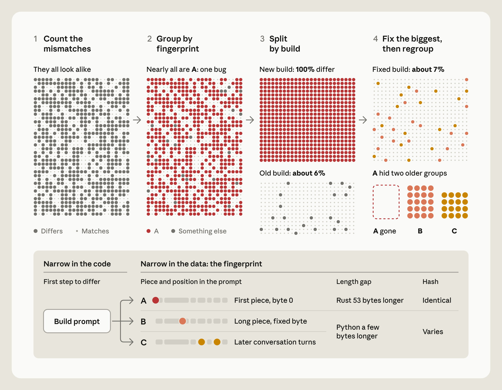
The result was a shadowing system that produced a small record of each difference between our Rust and Python APIs. Here is an example, with made-up values:
Kết quả là một hệ thống shadowing tạo ra một bản ghi gọn nhẹ cho mỗi điểm khác biệt giữa bản Rust và Python API. Dưới đây là một ví dụ với các giá trị giả định:
step: build prompt ← where in the code
piece: 2 ← where in the prompt
first diff: byte 17 ← fingerprint
python: 190 bytes ← fingerprint
rust: 190 bytes ← fingerprintstep: build prompt ← vị trí trong mã
piece: 2 ← vị trí trong prompt
first diff: byte 17 ← dấu vân tay lỗi (fingerprint)
python: 190 bytes ← dấu vân tay lỗi (fingerprint)
rust: 190 bytes ← dấu vân tay lỗi (fingerprint)We could then pass this record to an agent to fix it.
Sau đó chúng tôi có thể đưa bản ghi này cho một agent xử lý để sửa lỗi.
Verification loops
Các vòng lặp kiểm chứng
Each request that differed left a record in our logs. A single bug could produce hundreds of thousands of nearly identical diff records. Rather than send each to an agent, we ran a script every 10 to 30 minutes that grouped them by which fields differed, then alerted a coordinating Claude agent only when it saw a new kind of record. This coordinator assigned a worker agent to own each new kind of record. It also created a new thread in a shared Slack channel where human engineers could follow along and steer it when necessary.
Mỗi request có sai khác đều để lại một bản ghi trong log. Một lỗi đơn lẻ có thể tạo ra hàng trăm nghìn bản ghi diff gần như giống hệt nhau. Thay vì đẩy từng bản ghi cho agent, chúng tôi chạy một script mỗi 10 đến 30 phút để gom nhóm chúng theo các trường bị lệch, rồi chỉ báo cho một Claude agent điều phối khi thấy một loại bản ghi mới. Agent điều phối này giao một worker agent phụ trách từng loại bản ghi mới, đồng thời mở một thread mới trong kênh Slack chung để kỹ sư theo dõi và định hướng khi cần.
To tackle the many bugs, we set up a series of verification loops. A fast inner loop gave agents a sandbox in which they could test ideas and propose fixes. A slower outer loop then validated fixes in production. In addition, a memory loop recorded any mistakes along the way, saving them so that agents could learn over time (Figure 10).
Để xử lý hàng loạt lỗi, chúng tôi thiết lập một chuỗi các vòng lặp kiểm chứng. Một vòng lặp trong (inner loop) tốc độ cao cấp cho agent một sandbox để thử ý tưởng và đề xuất bản vá. Một vòng lặp ngoài (outer loop) chậm hơn kiểm tra lại bản vá trên production. Ngoài ra, một vòng lặp trí nhớ (memory loop) ghi lại mọi sai lầm dọc đường để các agent học hỏi dần theo thời gian (Hình 10).

Inner loop
Vòng lặp trong (Inner loop)
When we first started testing this in April, we gave each agent a record that showed where the Rust and Python versions differed. Agents would guess the root cause from the code and open a pull request. Once the fix was reviewed and merged, they deployed it to staging, a preproduction copy of the Rust API where we ran the same shadow comparison on test traffic. The agents checked whether the difference was eliminated. Since every hypothesis needed a review and a deployment, feedback was taking hours or days.
Khi mới bắt đầu thử nghiệm vào tháng 4, chúng tôi đưa cho mỗi agent một bản ghi chỉ ra chỗ bản Rust và Python lệch nhau. Agent sẽ đoán nguyên nhân gốc từ mã nguồn và mở một pull request. Khi bản vá được duyệt và merge, họ triển khai nó lên staging — bản sao tiền production của Rust API nơi chúng tôi chạy phép so sánh shadow tương tự trên lưu lượng thử nghiệm — rồi agent kiểm tra xem sai khác đã biến mất chưa. Vì mỗi giả thuyết đều phải qua review và deploy, vòng phản hồi kéo dài hàng giờ hoặc hàng ngày.
We needed agents to get a signal from verification much sooner, so we moved them into their own workspace. We redesigned the inner loop so that agents could have a place to test ideas quickly and fail safely. Each agent ran in a cloud sandbox with both codebases and fast, local checks for what happens before and after the model call. The input check took a request, built the prompt that each version would send to the model, and showed what differed. Because this check never actually called the model, comparing the versions took under a second. We later added an output check, which ran both versions against a fake model. The output check passed a scripted reply, such as a tool call, through each version and compared the results.
Chúng tôi cần agent nhận được tín hiệu kiểm chứng sớm hơn nhiều, nên đã đưa chúng vào không gian làm việc riêng. Chúng tôi thiết kế lại vòng lặp trong để agent có nơi thử nhanh và thất bại an toàn. Mỗi agent chạy trong một cloud sandbox có sẵn cả hai codebase cùng các phép kiểm tra cục bộ tốc độ cao cho những gì diễn ra trước và sau lời gọi mô hình. Phép kiểm tra đầu vào nhận một request, dựng prompt mà mỗi phiên bản sẽ gửi cho mô hình rồi chỉ ra chỗ khác nhau; vì không hề gọi mô hình thật, việc so sánh mất chưa tới một giây. Sau đó chúng tôi thêm phép kiểm tra đầu ra chạy cả hai phiên bản với một mô hình giả lập: nó đưa một câu trả lời viết sẵn (như một tool call) đi qua từng phiên bản rồi đối chiếu kết quả.
The main limitation was that agents could only see the fingerprint, not the request behind each record. So an agent would hypothesize what had caused the difference, then write its own request or model reply to try to reproduce the difference. Since each agent was writing these itself, it could read both results in full. If the results matched, its guess was wrong and the agent tried again. If they differed the same way the record described, the agent edited the Rust until the two versions matched, then added a test that failed on the old code and passed on the new (Figure 11).
Giới hạn chính là agent chỉ nhìn thấy fingerprint chứ không thấy request đứng sau mỗi bản ghi. Do đó, agent đặt giả thuyết về nguyên nhân gây lệch, rồi tự viết một request hoặc câu trả lời mô hình để thử tái hiện lại đúng sự sai khác đó. Vì tự mình tạo dữ liệu thử, agent có thể đọc trọn vẹn kết quả của cả hai bên. Nếu hai bên khớp nhau, tức là phỏng đoán sai và agent thử lại. Nếu chúng lệch theo đúng cách bản ghi mô tả, agent sửa mã Rust cho tới khi hai phiên bản khớp nhau, rồi thêm một bài test trượt trên mã cũ và qua trên mã mới (Hình 11).
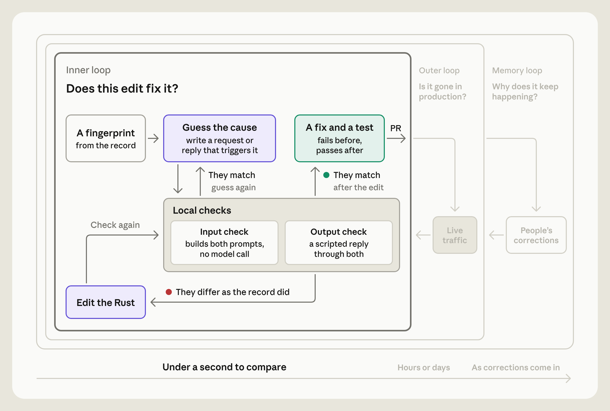
The seam between the inner and outer loops was a good checkpoint for human review. Inside the sandbox, a wrong guess cost an agent only a few seconds and had no impact on users. Agents could iterate on their own. We allowed a fix to cross into the outer loop only after it had undergone PR review; this allowed engineers to focus their attention on proposed fixes (rather than on guesses) and on the questions the verifiers couldn’t answer, such as whether a difference between the Rust and Python APIs was the result of a bug or a deliberate change.
Đường nối giữa vòng trong và vòng ngoài là điểm kiểm soát rất tốt để con người review. Trong sandbox, một phỏng đoán sai chỉ tốn của agent vài giây và không ảnh hưởng gì tới người dùng. Agent có thể tự lặp lại. Chúng tôi chỉ cho phép một bản vá bước sang vòng ngoài sau khi đã qua duyệt PR; nhờ vậy kỹ sư tập trung được vào các bản vá đề xuất (thay vì vào những lần đoán mò) và vào những câu hỏi mà bộ kiểm chứng không trả lời được — ví dụ một khác biệt giữa Rust và Python là lỗi hay là thay đổi có chủ đích.
Agents posted their fixes and evidence to their Slack threads for engineers to review. In mid-May, one of the largest remaining differences between the Rust and Python APIs came from web search. The production API retrieved the web search tool’s description from an internal service. The Rust API didn’t call this service yet, so the tool description was missing from the prompts. An agent proposed a shortcut to copy the text into files that would be readable by Rust. The prompts then matched, and the fix passed the local verifier. But an engineer turned it down because it didn’t solve the problem: Rust would still need to call the service before launch, at which point the workaround would be thrown out (Figure 12).
Các agent đăng bản vá và bằng chứng lên thread Slack tương ứng để kỹ sư duyệt. Giữa tháng 5, một trong những khác biệt lớn nhất còn sót lại giữa Rust và Python API bắt nguồn từ tính năng tìm kiếm web (web search). API production lấy phần mô tả công cụ web search từ một dịch vụ nội bộ. Bản Rust khi đó chưa gọi dịch vụ này nên prompt bị thiếu phần mô tả công cụ. Một agent đề xuất đường tắt là chép đoạn văn bản đó vào các file để Rust đọc. Nhờ thế prompt khớp nhau và bản vá vượt qua bộ kiểm chứng cục bộ. Nhưng một kỹ sư đã bác bỏ vì nó không giải quyết gốc rễ vấn đề: trước khi ra mắt, Rust vẫn buộc phải gọi dịch vụ kia, khi đó giải pháp chắp vá sẽ bị vứt bỏ (Hình 12).
But the verifier rewarded matching outputs, and the agent found the cheapest way to produce them. A verifier can tell an agent whether the outputs matched, but not whether the fix is good enough to ship. That’s why human review was an important gate.
Nhưng bộ kiểm chứng chỉ thưởng cho việc đầu ra khớp nhau, và agent đã tìm ra con đường rẻ nhất để tạo ra sự khớp đó. Bộ kiểm chứng có thể báo cho agent biết hai đầu ra có khớp không, chứ không thể biết bản vá có đủ tốt để đưa lên production không. Đó là lý do khâu duyệt của con người là một cánh cổng quan trọng.
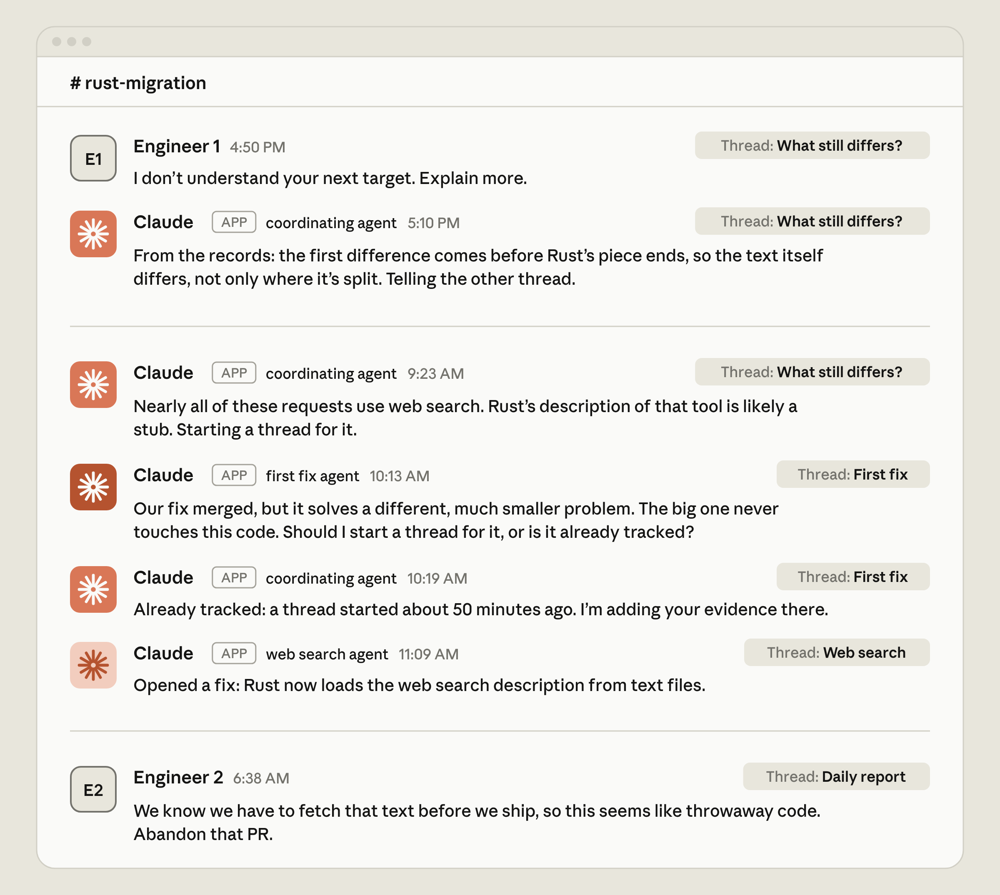
Outer loop
Vòng lặp ngoài (Outer loop)
In the inner loop, agents debugged differences and proposed fixes. At the seam between the inner loop and the outer loop, engineers reviewed the proposed fixes, gave feedback, and approved them to deploy. The outer loop then compared Rust API deployments with and without each fix.
Ở vòng lặp trong, agent gỡ lỗi các sai khác và đề xuất bản vá. Tại đường nối giữa vòng trong và vòng ngoài, kỹ sư duyệt các bản vá đề xuất, góp ý và phê duyệt triển khai. Sau đó vòng lặp ngoài so sánh các bản triển khai Rust API có và không có bản vá đó.
To make that comparison fair, we logged facts about each request we compared, but not its text, including which model and API features it used—for example, prompt caching, tools, or extended thinking. These details let agents compare requests of the same kind (Figure 13) and ask how often the bug’s fingerprint appeared on builds with and without the fix. This way, agents could monitor the new builds for the bug.
Để phép so sánh công bằng, chúng tôi ghi log các dữ kiện mô tả từng request được đối chiếu — nhưng tuyệt đối không ghi nội dung chữ — bao gồm nó dùng mô hình nào và những tính năng API nào, chẳng hạn prompt caching, tools hay extended thinking. Những chi tiết này giúp agent so sánh các request cùng loại (Hình 13) và xem tần suất fingerprint của lỗi xuất hiện trên các bản dựng có và không có bản vá. Nhờ vậy agent có thể giám sát lỗi trên các bản dựng mới.
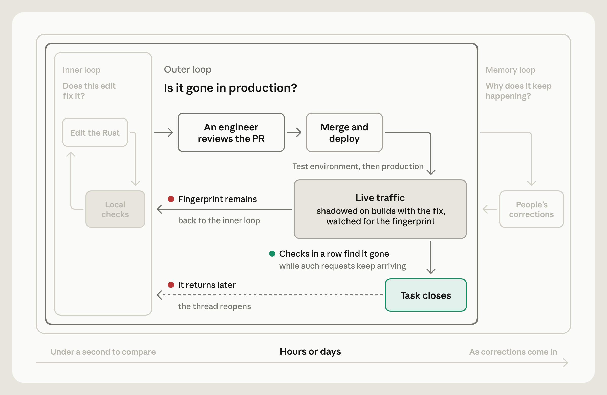
We designed the outer loop to catch problems that the inner loop missed. The inner loop simulated production quickly but imperfectly: agents could test a hypothesis in seconds, but only on requests they had written, and with a local verifier that wasn’t always configured exactly like production.
Chúng tôi thiết kế vòng lặp ngoài để bắt những vấn đề mà vòng trong bỏ lọt. Vòng trong mô phỏng production rất nhanh nhưng không hoàn hảo: agent có thể kiểm chứng một giả thuyết trong vài giây, nhưng chỉ trên những request do chính nó viết và với bộ kiểm chứng cục bộ không phải lúc nào cũng cấu hình giống hệt production.
This means that sometimes a fix passed in the sandbox and production still showed the difference. The agent assigned to the bug would either see the difference in the new build’s records, or be alerted by the coordinating agent. It then went back to the inner loop and used that evidence to form a new hypothesis.
Điều đó có nghĩa đôi khi một bản vá vượt qua được sandbox nhưng ngoài production vẫn còn sai khác. Agent phụ trách lỗi đó sẽ tự thấy sai khác trong bản ghi của bản dựng mới, hoặc được agent điều phối báo lại. Sau đó nó quay về vòng lặp trong và dùng bằng chứng mới để lập giả thuyết mới.
Memory loop
Vòng lặp trí nhớ (Memory loop)
The inner and outer loops fixed one difference at a time. The memory loop improved how agents made those fixes. We didn’t want engineers to have to make the same correction twice, so we recorded what came out of reviews and agents’ own work and applied it to every agent that followed.
Vòng trong và vòng ngoài sửa từng sai khác một. Còn vòng lặp trí nhớ (memory) cải thiện chính cách các agent tạo ra các bản vá đó. Chúng tôi không muốn kỹ sư phải nhắc lại cùng một lỗi hai lần, nên những gì rút ra từ các lần review và từ quá trình làm việc của agent đều được ghi lại và áp dụng cho mọi agent đi sau.
For example, when an engineer turned down the web search shortcut (Figure 12), the agent saved a note to memory explaining the decision, the reason for it, and the correct fix, which was to have Rust call the service that supplies tool descriptions.
Chẳng hạn, khi một kỹ sư bác bỏ đường tắt cho web search (Hình 12), agent đã lưu một ghi chú vào bộ nhớ giải thích quyết định đó, lý do bác bỏ và cách sửa đúng là để Rust gọi dịch vụ cung cấp mô tả công cụ.
Building that call took our team weeks, and in the meantime the bug kept producing records. Some had new fingerprints, because the missing text fell at other positions in the prompt or belonged to another tool that used the same service. Agents checked the memory note, recognized the known bug, and linked those records to it, instead of writing another workaround (Figure 14).
Việc xây dựng lời gọi dịch vụ đó mất của nhóm nhiều tuần, và trong lúc chờ đợi thì lỗi vẫn tiếp tục sinh ra các bản ghi. Một số bản ghi mang fingerprint mới vì đoạn chữ bị thiếu rơi vào vị trí khác trong prompt hoặc thuộc về một công cụ khác dùng chung dịch vụ đó. Các agent tra ghi chú trong bộ nhớ, nhận ra đó là lỗi đã biết và gắn những bản ghi mới vào lỗi cũ, thay vì lại viết thêm một giải pháp đối phó khác (Hình 14).
Other lessons became general rules for porting and writing Rust. After one agent guessed at Python’s behavior, an engineer made it a rule to port exactly what Python did. An agent then compared the existing code with that rule and found seven more places where the port had relied on a guess.
Những bài học khác trở thành quy tắc chung cho việc port và viết Rust. Sau khi một agent đoán mò hành vi của Python, một kỹ sư đặt ra quy tắc phải port chính xác y hệt những gì Python làm. Một agent khác liền rà soát mã hiện có theo quy tắc đó và phát hiện thêm bảy chỗ khác mà bản port trước đó đã dựa vào phỏng đoán.
In June, an agent also went through about 60 of the team’s review comments, grouped the recurring problems and proposed rules, which an engineer edited and approved for CLAUDE.md (Figure 14).
Vào tháng 6, một agent cũng rà soát khoảng 60 bình luận review của cả nhóm, gom các lỗi lặp lại và đề xuất bộ quy tắc để kỹ sư chỉnh sửa rồi duyệt đưa vào CLAUDE.md (Hình 14).
The memory loop also encoded some lessons in permanent checks. This included new tests that failed when Rust drifted from Python, lints that banned patterns reviewers kept flagging, and later a merge check that required anyone changing the Python code to make a matching change in Rust or request an exemption.
Vòng lặp trí nhớ cũng mã hóa một số bài học thành các phép kiểm tra vĩnh viễn. Trong đó có các bài test mới sẽ trượt nếu Rust trôi lệch khỏi Python, các rule lint cấm những kiểu viết mà người review liên tục nhắc, và sau đó là một kiểm tra lúc merge bắt buộc bất kỳ ai sửa mã Python đều phải làm thay đổi tương ứng ở Rust hoặc xin ngoại lệ.
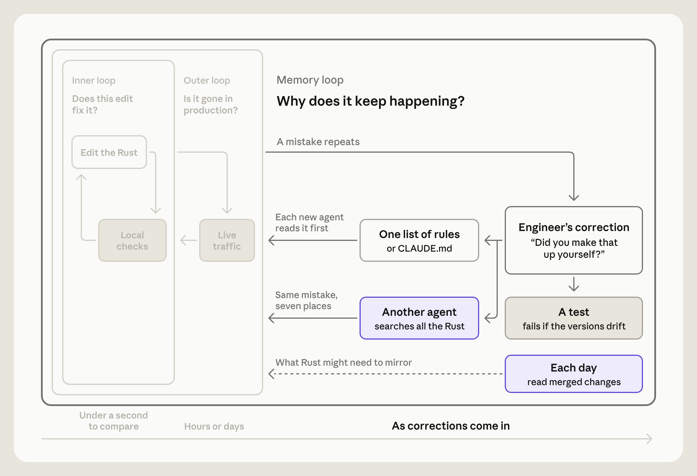
Looking ahead
Nhìn về phía trước
It’s increasingly feasible to migrate production systems with Claude, either for better performance or security, without taking an API offline or slowing feature development. Now that the hard part is no longer writing new code, we need to build sufficient confidence that the new system behaves like the old one.
Việc di chuyển các hệ thống production bằng Claude — dù để đạt hiệu năng tốt hơn hay bảo mật hơn — đang ngày càng khả thi mà không cần tắt API hay làm chậm tiến độ phát triển tính năng. Giờ đây, khi phần khó không còn là viết mã mới nữa, chúng ta cần xây dựng đủ độ tin cậy rằng hệ thống mới hành xử giống hệt hệ thống cũ.
The usual approach to migration is a bit like rebuilding the Ship of Theseus, in which the old ship was replaced plank by plank. Generally it’s been possible to replace planks while the ship still sails, but changing too many planks at once requires coming into dock. To fully stretch the metaphor, Claude now makes it possible to build an identically functioning ship alongside the first—even as the first keeps sailing and having its planks replaced. Agents kept the new ship in step as the old one changed, and we kept checking that the two behaved the same. Once we trusted that they did, we moved the passengers over a few at a time. The new ship sails faster and more efficiently than the old one.
Cách di chuyển truyền thống giống như đóng lại con tàu Theseus bằng cách thay từng tấm ván một của con tàu cũ. Nhìn chung người ta có thể vừa căng buồm vừa thay ván, nhưng thay quá nhiều tấm cùng lúc thì buộc phải đưa tàu vào ụ. Nếu kéo dài phép ẩn dụ này, Claude giờ đây cho phép dựng một con tàu hoạt động giống hệt chạy song song ngay cạnh con tàu đầu tiên — ngay cả khi con tàu đầu vẫn đang ra khơi và liên tục được thay ván. Các agent giữ cho con tàu mới bám sát từng thay đổi của tàu cũ, còn chúng tôi liên tục kiểm tra để bảo đảm cả hai vận hành như nhau. Khi đã tin cậy, chúng tôi chuyển hành khách sang từng ít một. Con tàu mới chạy nhanh hơn và hiệu quả hơn hẳn con tàu cũ.
Lessons learned
Những bài học rút ra
Verification is the new bottleneck. Previously, large software projects like migrations were hard to justify because they took too much effort and carried too much risk. But if writing code is no longer the bottleneck, the main constraint becomes how quickly you can verify results. In general, ambition can be increased as long as there’s a way for Claude to verify correctness.
Kiểm chứng là nút thắt mới. Trước đây, các dự án phần mềm lớn như di chuyển hệ thống rất khó thuyết phục triển khai vì tốn quá nhiều công sức và mang quá nhiều rủi ro. Nhưng nếu viết mã không còn là nút thắt, giới hạn chính sẽ nằm ở việc bạn kiểm chứng kết quả nhanh tới đâu. Nhìn chung, tham vọng có thể nâng lên chừng nào vẫn còn cách để Claude kiểm chứng tính đúng đắn.
Verification is how you earn confidence. In math, we use a proof assistant to verify that each step of a proof Claude wrote is valid. For software, tests or formal verification can help us gain similar confidence. But when these checks aren’t enough, a production system itself can also be a verifier.
Kiểm chứng là cách bạn giành lấy niềm tin. Trong toán học, ta dùng trình hỗ trợ chứng minh để kiểm tra từng bước chứng minh mà Claude viết là hợp lệ. Với phần mềm, bộ test hoặc kiểm chứng hình thức (formal verification) giúp ta có niềm tin tương tự. Nhưng khi những kiểm tra đó chưa đủ, chính một hệ thống production cũng có thể đóng vai bộ kiểm chứng.
Carefully design the verification signal. A verifier provides a signal that Claude can act on. We can calibrate this signal to show Claude where things went wrong. Where a proof assistant points to the failing step or a test names the failing case, a production system often offers no such signal by default. Much of our effort for this project went to building such a signal. In this case, checkpoints located each difference in the code and fingerprints helped tell one bug from another.
Thiết kế kỹ tín hiệu kiểm chứng. Bộ kiểm chứng cung cấp một tín hiệu để Claude hành động dựa vào đó. Ta có thể hiệu chỉnh tín hiệu này để chỉ cho Claude thấy chỗ nào trục trặc. Trong khi trình hỗ trợ chứng minh chỉ thẳng bước sai hoặc bài test nêu tên case trượt, một hệ thống production mặc định thường không có sẵn tín hiệu như vậy. Phần lớn công sức của chúng tôi trong dự án này dành cho việc dựng lên tín hiệu đó. Ở đây, checkpoint định vị từng sai khác trong mã và fingerprint giúp phân biệt lỗi này với lỗi khác.
Build loops that let Claude autonomously act on the signal. Our inner loop was fast and ran locally in a sandbox. Agents tested hypotheses in seconds using requests they wrote themselves. The outer loop was slower and checked fixes on shadowed production traffic. The outermost loop was just prose, with corrections saved as rules in memory that could be read by every agent later in the process. Together, these loops allowed us to migrate the Messages API to Rust, which uses about 70% less CPU per request and reduces median time to first token by about 20% (Figure 15).
Xây dựng các vòng lặp để Claude tự chủ hành động theo tín hiệu. Vòng lặp trong của chúng tôi chạy rất nhanh và cục bộ trong sandbox. Các agent kiểm tra giả thuyết trong vài giây bằng chính những request chúng tự viết. Vòng lặp ngoài chậm hơn, kiểm tra bản vá trên lưu lượng production được shadow. Vòng ngoài cùng chỉ là văn xuôi, lưu các lần uốn nắn thành quy tắc trong bộ nhớ để mọi agent về sau đọc lại. Kết hợp lại, các vòng lặp này đã giúp chúng tôi chuyển đổi Messages API sang Rust, dùng ít hơn khoảng 70% CPU mỗi request và giảm khoảng 20% thời gian trung vị tới token đầu tiên (Hình 15).

Keep the loops simple, so they scale with Claude’s capability. We tried to put human judgment only into what counted as correct; otherwise we left it up to Claude how to get there. Agents chose which hypotheses to test, how to reproduce each bug, and how to fix it. The verifiers judged the result. Simple loops around strong verifiers allowed us to move productively over time (Figure 16).
Giữ các vòng lặp đơn giản để chúng mở rộng tỷ lệ thuận với năng lực của Claude. Chúng tôi cố gắng chỉ đặt phán đoán của con người vào việc thế nào là “đúng”; còn làm sao để đạt tới đó thì giao cho Claude tự quyết. Các agent tự chọn giả thuyết để thử, cách tái hiện từng lỗi và cách sửa. Bộ kiểm chứng sẽ chấm kết quả. Những vòng lặp đơn giản xoay quanh các bộ kiểm chứng mạnh giúp chúng tôi duy trì năng suất cao theo thời gian (Hình 16).
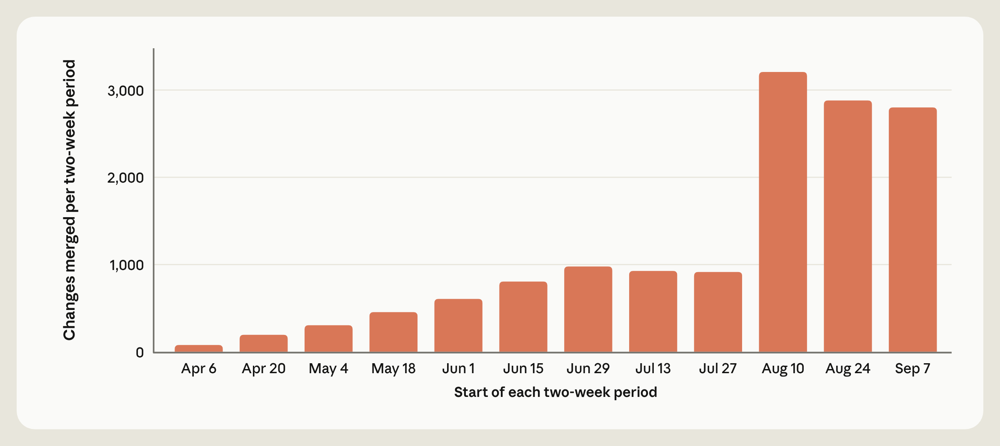
Move toward outer loops. At first, we had our engineers working inside the inner loop, running Claude and chasing differences themselves. Later, they moved to the seam between loops, helping to steer agents and reviewing fixes in Slack. But as the system matured, they increasingly moved to the edge, where they could provide the highest leverage, writing the rules and checks that agents worked within. As Claude grew more intelligent (and as we grew more intelligent at working with it), we evolved from directing Claude to Claude directing itself, relying on humans mainly for important judgment calls.
Dịch chuyển dần ra các vòng lặp ngoài. Ban đầu, các kỹ sư của chúng tôi làm việc ngay bên trong vòng lặp trong, tự chạy Claude và tự truy tìm sai khác. Về sau, họ lùi ra đường nối giữa các vòng lặp để dẫn hướng agent và duyệt bản vá trên Slack. Nhưng khi hệ thống trưởng thành, họ ngày càng dịch ra vùng rìa ngoài — nơi tạo ra đòn bẩy lớn nhất — để viết các quy tắc và phép kiểm tra làm khung cho agent vận hành. Khi Claude thông minh hơn (và chúng tôi cũng khéo léo hơn khi làm việc cùng nó), mô hình tiến hóa từ chỗ con người chỉ đạo Claude sang Claude tự điều hướng chính mình, chỉ dựa vào con người ở những quyết định phán đoán quan trọng.
Ghi chú & lưu ý của người dịch
Điểm nhấn và các lưu ý phương pháp cần đọc kỹ từ bài viết
- Kiểm chứng (không phải sinh mã) mới là nút thắt thực sự: Claude viết khung xử lý request cốt lõi bằng Rust chỉ trong khoảng một tuần, nhưng toàn bộ hành trình từ tháng 4 đến tháng 9/2026 chủ yếu xoay quanh việc dựng tín hiệu kiểm chứng chính xác. Bài học quan trọng cho bất kỳ ai dùng coding agent trên hệ thống production là không thể dựa thuần vào việc agent tự port unit/integration test cũ (vì hơn 100 assertion đã bị làm yếu đi khi agent sửa cả mã lẫn test).
- Phạm vi đo lường của các con số hiệu năng (Hình 15): Anthropic chủ động ghi rõ các lưu ý đọc biểu đồ: mức giảm ~70% CPU được đo trên một region; giảm >80% bộ nhớ đo trên toàn production; còn mức giảm ~20% TTFT trung vị chỉ đo trên request Claude Code của khách hàng trong một khung thời gian ngắn hơn, trong đó nhịp giảm trước điểm mốc đầu tiên diễn ra khi phần lớn request vẫn còn chạy trên Python.
- Số lượng PR và tỷ lệ khớp đầu vào đều có thay đổi mẫu số (Hình 6 & 16): Biểu đồ khớp đầu vào (từ 24% cuối tháng 4 lên 99,6% vào tháng 8) có phạm vi request so sánh thay đổi dần từ lưu lượng nội bộ sang mẫu rộng hơn và bỏ qua 6 ngày số liệu gây nhiễu. Tương tự, cột >3.000 thay đổi merge mỗi 2 tuần ở Hình 16 bao gồm cả tính năng mới trên Rust API chứ không thuần túy là sửa parity.
- Bộ kiểm chứng đo sự khớp đầu ra, không đo chất lượng kiến trúc: Ví dụ công cụ web search tháng 5 cho thấy rõ agent sẽ tối ưu theo tín hiệu kiểm chứng — sẵn sàng copy chuỗi mô tả vào file tĩnh để vượt qua sandbox cục bộ thay vì gọi dịch vụ nội bộ. Cổng review PR của con người ở đường nối giữa vòng trong và vòng ngoài vẫn là chốt chặn không thể thiếu.
- Quyền riêng tư buộc phải tách hẳn dữ liệu khỏi tín hiệu gỡ lỗi: Vì không được đọc prompt và câu trả lời của khách hàng, nhóm kỹ sư phải thiết kế hệ thống checkpoint + fingerprint thuần siêu dữ liệu (tên bước, mảnh, byte lệch đầu tiên, độ lệch độ dài), buộc agent phải tự suy luận giả thuyết và viết request mẫu để tái hiện — một mẫu thiết kế rất đáng học cho các dịch vụ xử lý dữ liệu nhạy cảm.
- Liên hệ các bài viết cùng mạch trên blog: Có thể đối chiếu hướng thay thế từng phần C++ bằng Rust qua Crubit trong “Rust trong bình yên”, quy trình nhiều agent AI trong “Xây ngôn ngữ Zed với đội quân agent AI”, góc nhìn duyệt kết quả ở quy mô lớn trong “Brian Armstrong và đội ngũ AI: giá trị nằm ở hàng đợi quyết định” và cách rút quy tắc từ phản hồi lặp lại trong “Tự động hóa mọi thứ với Grok Bot”.
Đây là ghi chú tổng hợp của người dịch dựa trên nội dung và chú thích gốc của bài viết.
Mindmap — Chuyển đổi Messages API sang Rust
mindmap
root((Messages API sang Rust))
Bối cảnh
Lưu lượng tăng 1800 lần
Viết lại từng phần tốn chi phí qua lại 3 lần
Claude viết lõi Rust trong 1 tuần
Nút thắt là kiểm chứng chứ không phải viết mã
Giới hạn của test cũ
700 test gắn chặt Python
Hơn 100 assertion bị làm yếu khi port
20 tùy chọn nhị phân ra hơn 1 triệu tổ hợp
Tháng 4 qua 98 phần trăm test nhưng chỉ khớp 24 phần trăm thật
Production làm bộ kiểm chứng
Gọi mô hình một lần rồi replay cho Rust
Tránh tính cước hai lần và tránh bất tất định
Checkpointing từng bước và từng mảnh
Fingerprint bằng vị trí byte lệch và độ dài
Bảo toàn quyền riêng tư không đọc nội dung
Ba vòng lặp kiểm chứng
Vòng trong sandbox dưới 1 giây tự tái hiện lỗi
Cổng duyệt Slack chặn giải pháp đối phó
Vòng ngoài theo dõi shadow ngoài production
Vòng trí nhớ lưu quy tắc CLAUDE.md và lint
Kết quả và bài học
Giảm 70 phần trăm CPU mỗi request
Giảm hơn 80 phần trăm bộ nhớ
Giảm 20 phần trăm TTFT trung vị
Con người dịch dần ra vòng ngoài
Nguồn gốc: bài “Migrating our Messages API to Rust” của Lance Martin, Jake Eaton, Arvin Aminpour, Emma Webb, Bharat Mediratta, Ravi Trivedi và Caitlin Love trên Anthropic Research; và bài đăng của @AnthropicAI. Nội dung và toàn bộ 17 hình minh họa thuộc về Anthropic; bản dịch tiếng Việt đăng trên blog này vì mục đích học tập.